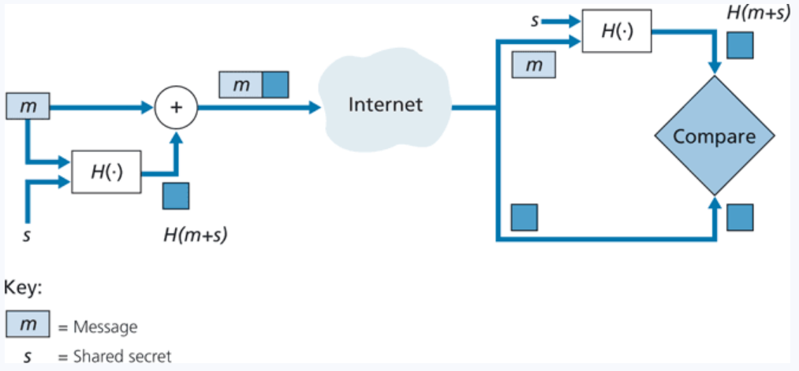
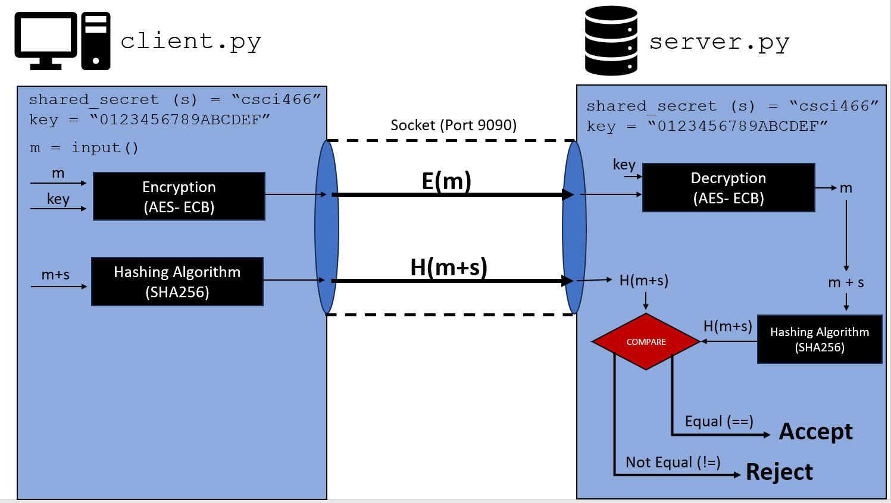

Programming Assignment 5: Message Authentication Codes (MAC)
Assigned Wednesday November 29th (just pretend)
Due Wednesday December 13th @11:59 PM
(but I strongly recommend knocking it out before finals week)
GitHub Repo
You will use the same GitHub repo from PA1, PA2, PA3, and PA4. All of your files for this assignment should go inside a /PA5 folder
Overview
Message Authentication Codes (MAC) are security mechanisms used to achieve authentication and/or message integrity between two communicating hosts. In this assignment, you will be implementing a basic MAC system, as well as get your hands dirty with some cryptography and hashing libraries.
Two parties have some shared secret
(s). The sender will send two different messages. The first is the message m, the second is the MAC packet, which (m + s) ran through a hashing function. That is,
H(m+s).
The receiver gets these two messages, and then compute
H(m+s) themselves, and then compare hashes. If the hashes do not match, that is a sign that the message may have been corrupted, tampered with, or possibly spoofed.
Here is a diagram of a simple MAC system:

There will be one important difference for this assignment. The message that gets transmitted (
m) must be
encrypted . The receiver gets
E(m), and then must decrypt the message using the decryption key. Both parties have an identical, shared key for encrypting and decrypting (Symmetric key cryptography!).
WARNING: You should not use this assignment to handle authentication/integrity out in real world software. Never roll out your own crypto/hashing schemes :-)
Directions
You are going to develop two programs:
client.py and
server.py
client.py
This program will have
s and the
key hardcoded into the program. For the sake of simplicity, the shared secret (
s) will be
"csci466", and the key will be
"0123456789ABCDEF" (it's important that this key is 16 bytes in size).
This program will ask the user for some message they would like to send to the server. The client program will encrypt this message, and then send the encrypted message to the server program through a socket (the socket can be running on any port that you'd like).
You should use TCP sockets.
Then, the client program will need to compute
H(m+s). You should use the SHA-256 hashing algorithm. The client then sends
H(m+s) to the server program through the same socket.
There is a 50% chance that the message being send can be corrupted/tampered. Before sending the messages, you should flip a coin (
random.random()). If it's > .50, the message is not corrupted, and nothing needs to happen. If it's <= .50, then this means the message has been corrupted/tampered with. You will either have to modify
m or
s so the
H(m+s) results in an entirely different digest.
server.py
The server will have the same
s and
key value hardcoded into the program (we will assume these secrets have been shared through something like RSA/DHKE).
The server first receives
E(m) from the client, which they will now decrypt using their
key. Now that they have
m, they can compute
H(m+s) on their end.
Once the server computes
H(m+s), it will then compare it to the
H(m+s) value that it received from
client.py.
If the hashes match, then the message has not been corrupted or tampered with, so it should "Accept" this packet. If the hashes do not match, then the message has been corrupted or tampered with, so it should "Reject" this packet.
The client and server program should loop, so the user can continually enter new message to send to the server without needing to restart the program.

Encrypting and Decrypting Data
Because there is not a built-in encryption library in Python, you will need to quickly install one. I would strongly recommend using the
pycryptodome module (
https://www.pycryptodome.org/).
You should be able to install this library by running the command
pip install pycryptodome. If you struggle with the installation step, you will have to do some googling/debugging yourself (make sure that python is on $PATH).
There is a lot of great stuff in this library, but we are focused on using an AES block cipher to encrypt our message (
m). You should use the ECB mode of encryption (remember that ECB sucks in the real world, but this assignment will get more challenging if you decide to something that is not ECB).
You will likely need to read some documentation to get a better understanding of how this library works. Here is a very basic example of encrypting and decrypting a message with
pycryptodome.
First, an
AES block cipher object must be created by providing a key, and the mode of encryption (
AES.MODE_ECB). Then, the
encrypt() function can be used to encrypt a piece of data. The data must be padded using
the pad() function for scenarios when the data is not a good multiple of the block size.
To decrypt using an
AES block cipher object, you can pass a ciphertext to the
decrypt function, which should return the plaintext message.
A tricky part of this assignment is going back and forth between the
str datatype, and the
bytes datatype. Remember that if you see
b`...`, that is an indicator that the value is bytes. To go from bytes to a string, you need to use the
.decode(). To go from a string to bytes, you need to use the
.encode() method.
Computing a SHA-256 hash of a message
In python, there is a built-in hashing library called
hashlib. Within this library, there is a
sha256 function. You can read more about
hashlib and
sha256 here:
https://docs.python.org/3/library/hashlib.html#usage
Here is a basic example of computing the SHA256 hash of the string
"csci466":
The SHA256 hash function expects bytes, so we first convert our message (a string) to bytes using
.encode(). The most common way to represent a hash digest is hexadecimal, so after running it through the
sha256 function, we convert to hexadecimal using the
hexdigest() function.
<
Programming Language
You are allowed to use a programming language of your choice. Although, you must use a language that supports:
Python is the support language for this class, so Reese will not be able to help with technical issues or syntax issues if you select a language other than Python. Java, Rust, Go, C/C++ are all valid languages to use.
Input Files
There are no input files for this assignment. There is no required command line arguments, but you are welcome to add command line arguments (port #, secret, key, etc) if you would like (just make sure you document it in your
README)
Sample output
On the client side, it should ask for user input. The client program should also print the computed value of
H(m+s), as well as if it is sending a corrupted/tampered message.
On the server side, it should print out the encrypted message
E(m), the decrypted message
m, and the
H(m+s) value that was received from the client.
The server should then print out the
H(m+s) value that
they computed. Lastly, the server program should print out if the
H(m+s) value it received, and the
H(m+x) it computed match or do not match. Then print "accept" or "reject"
Click here to see an a sample demo of the program. It's much easier to understand by watching a video instead of looking at a picture. There is no required output to match exactly, but it should be very similar to what you see in the video.
Hints
Take baby steps. First get a message to be encrypted, then send the message to the server, then get the server to decrypt the message and print it out properly.
Once you have that working, compute
H(m+s) on the client side, and then send it to the server. Then compute
H(m+s) on the server side, then compare hashes.
After that, that try to get the random probability of sending a corrupted packet.
Lastly, then throw everything inside a while loop so that the programs repeat and ask for new user input.
Video Demo
You will record a video demo that highlights the functionality of your program. You can do this with Panopto, or you can record with another recording software (such as OBS) and post it to youtube as private or unlisted.
Your video demo should include scenarios were the hashes match (Accept) and when the hashes do not match due to corruption/tampering (Reject).
Partners
You are allowed to work with up to two partners. All members need to have their own repository (yes they will all have the same code).
Submission Info
BOTH MEMBERS MUST SUBMIT A REPO LINK TO D2L. All files should be pushed to your repository. You still need a README that contains the video link and information about your program.
Grading Rubric (100 Points)
| Criteria |
Points |
| Message M is encrypted, and the encrypted message is sent to the receiver via a socket |
15 |
| Message M is decrypted by the receiver |
15 |
| H(m+s) is computed by the sender, and send to the receiver via a socket |
20 |
| There is 50/50 chance the packet get corrupted |
10 |
| The receiver computes H(m+s) |
20 |
| Your program can detect when a packet has been tampered with/corrupted (reject) |
10 |
| Your program can detect a clean packet (accept) |
10 |
Penalties
- Running code results in errors before runtime: -30 points
- Running code results in errors during runtime: -15 points
- No video demo: -50 points
- Your repository is public: -100 points
Helpful Examples
Solution